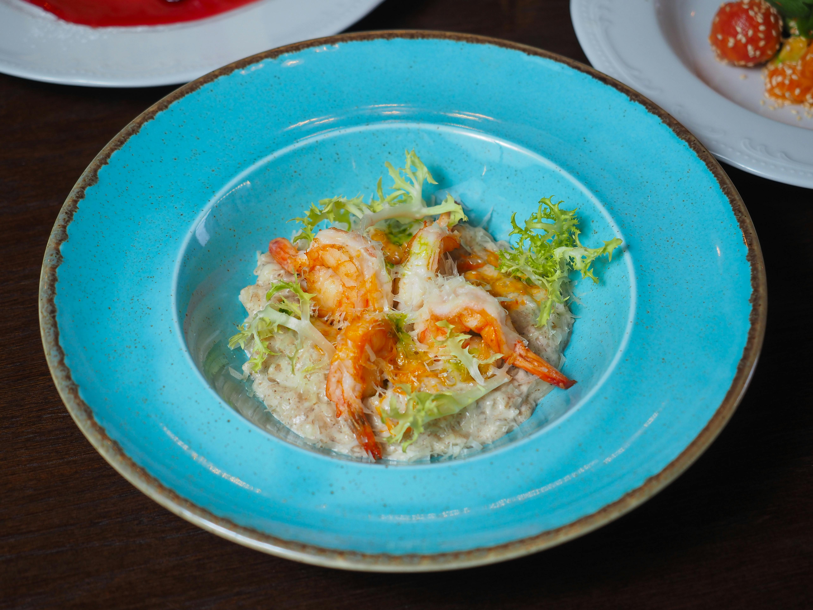
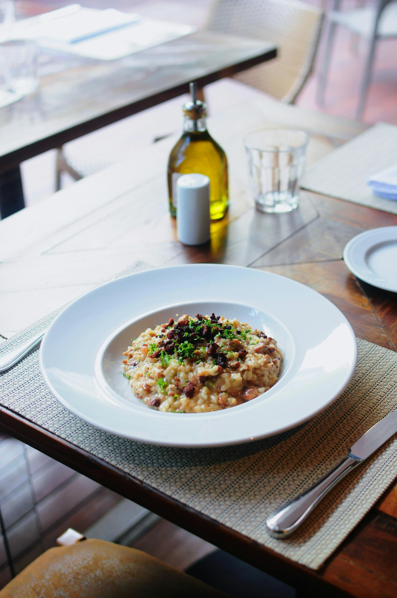

Risotto
Risotto
Press to go back
to go back

Eleagant Risotto
Risotto, a creamy rice dish, has a rich history rooted in northern Italy, particularly the Po Valley region.
The dish's origins are linked to the introduction of rice to Italy by the Arabs in the Middle Ages, who first brought it from Asia.
While rice was initially a luxury item, it gradually became a staple in Milan, where it was combined with local cooking techniques to create "Risotto alla Milanese".
Ingredients
- Broth
- Olive oil
- Mushrooms
- Shallots
- Rice
- Wine
- Butter
- Parmesan cheese
- Chives
Steps to prepare Risotto
- Hot broth: Keep the broth hot the whole way through. Measure out a little more into the broth pot than the recipe says to make up for evaporation as it sits.
- Toast the rice: An essential step to making risotto is to toast the grains in hot oil until they start to turn translucent around the edges. This could take a couple of minutes. Stir continuously during this process.
- Stir, stir, stir: Yes, you stir risotto as it simmers. That's what helps release the starch from the grains of rice to make that creamy texture you want. Do you have to stir constantly? No. Stir after each half cup of broth you add to make sure the broth is distributed evenly, then stir again every 30 seconds or so until almost all the broth is absorbed. Add another half cup of broth and repeat. Listen to music. Sip some wine. Good risotto is worth the time it takes.
- Low and slow: Keep the broth hot and the risotto at a low simmer throughout.
- The perfect texture: Risotto is done when the rice is al dente: firm but not crunchy when you bite into it. It should not be as dry as steamed rice, but should have enough liquid to make it loose. Add just a touch more broth if needed before stirring in the butter and Parmesan cheese.
- Serve immediately: Risotto waits for no one. It will continue to cook as it sits even when it's off the heat, so be prepared to dish it up right away.
